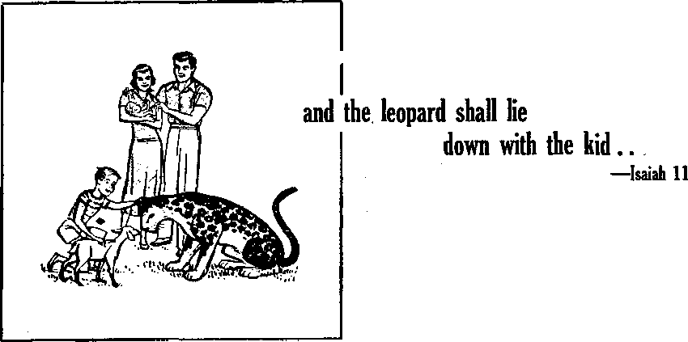

BIBLE COUNSEL PROMOTES MENTAL HEALTH
Its sound principles lead to a Hi'.ppicr !<iv
JV p{ >i s ot ;e.Ii Hl f VCH/H H i.’ «
-.-tv*
J, 1..A. M.K.C. h.Pv,
SEPTEMBER 8, 1956 semimonthly
News sources that era able to keep you awake to the vital bouts of our time® must be unfettered by <!eneonfdp and selfish interests. “Awake 1” has no fetters. It recognises facta, faces facts, Is free to publish facts. It is not bound by political ambitions or obligations; ft b unhampered by advertisers whose toes must not be trodden on; Li is unprejudiced ty traditional creeds. This Journal keeps itself free that it may speak freely to you. But it does not abuse Its freedom. It maintains integrity to truth.
"Awake 1” uses the regular news channels, but is not dependent on them. Its own correspondents are on all continents, in scores of nations. From the four comen of the earth their uncensorpd, on'the-scenes reports come to you through these columns. This Journal’s viewpoint is not narrow, but Is IntemationaL It is read in many nations, in many languages, by persons of all ages. Through tts pages many fields of knowledge pass in review—government, commerce, religion, history, geography* science, social conditions, natural wonders—why, its cover* age Is as broad as the earth and as high as the heavens.
"Awake I*1 pledges itself to righteous principles, to exposing hidden foes and subtle dangers, to championing freedom for all, to comforting mourners and strengthening those disheartened by the failures of a delinquent world, reflecting sure hope for the establishment of a right* ooua New World.
Get acquainted with “Awake 1” Keep awake by reading “Awake!”
Published Semimonthly By WATCHTOWER BIBLE and tract SOCIETY OF NEW YORK. INC. 117 Adams Street, - Brooklyn 1. New York, U. S. A.
N. H. Knorr, President
Printing this issua; 1,900,000
OtMr hHHfn In whlrt "AnUr' F> piblhhe*: StHtfmprtthljF—AfrikuBDa, Flnnfsli, Frsiich, Germ an, UollindlBh, iLslliB, Bpwntsiv flwedisli,
■ Mtlily-—D«nlabp Greek, Jxpanwe, Portiigiree, UkralnikiL
Yearly sufaseriptlon rates
Mm for Mmisonthly editions
An»rt*if U.S., 11T Adams St, BriMJlflyB 1, N.Y. *1 A Mirai Lt, 11 Beresford JW., Btrathfleld, N.S.W. 8/-CaaHa, ISO BrtdseUnd Ave.. Park Hoad P.O.,
Toronto 10, Ontario Si
Enalmi, 34 Craven Term, London W. 2 7/-
N«W Zaalanl, G.P.0. Boi 30, Wellington, C. 1 7/. So»tt Africa, Prirate Buc, Handsfontein, Tri. 7/-MonWy »iitte*5 cost half th* abm rater.
Grant Suiteb, Secretary
Five cents a copy
Rmltinntes should be sent to nfiliv in ymr cotiri Lry In eompliame w1(h regulation.-! te piwaute, wife delivery of money. Krmihanccs orc accepted u, Brooklyn from couti Iries where no/office ft located, fay luLernatioiial money order only. Subscription rates in different countries are here slated in Iwai currency. Kotin of exf list ten {wftli renewal Mank) is went at leant two issues before subsCriptitm es-plres. Chanda of iiddrew when nent te our offlrr-may be expected effeclHe within one mimth. fltersd your old as well as new addresn.
Entered as second-riass metier at Brooklyn. h’. V Printed in U.S.A.
CONTENTS
Bible Counsel Promotes Mental Health
Radiation—How Great the Peril?
England’s Commercial Television
Intolerance of Orthodox Clergy
Psychoanalyzing the Psychoanalysts
The Watch Tower’s New Canadian
"Your Word Is Truth"
Jehovah’s Witnesses Preach in AH
Volume XXXVII
Brooklyn, N, Y., September 0, 1956
Number 17
Opportunities for getting married are greater in the Western world today than at any previous time in history. Yet the chances for staying married appear to be slimmer than ever. The distressing fact is that between one fourth and one third of the total marriages in the United States end up in divorce. In certain cities the divorce rate at times “equals or exceeds one half the marriage total. Yet divorce is only one index of family disorganization. Almost 2,000,000 married persons are separated—temporarily or permanently—because of marital discord,” reports James H. S. Bossard, professor of sociology, in an article in the New York Times Magazine, June 24,1956. He further declares that “surveys reveal that one-fifth or one-sixth of all couples living together think of themselves as unhappy and that an equal number can report only ‘medium happiness? ”
Why do so many marriages go wrong? Professor Bossard lists eight reasons. His first; “Many people marry too young?’ They marry before they are emotionally mature, before experiencing life in an adult world. The average age at which women marry for the first time is now about twenty; and men, about twenty-two. The drastic change from a sheltered life of youth or from school days t<5 fin adult life of marriage is too big without mature experience. Deep roots in the true picture of life are absolutely necessary if the adjustment period of marriage is going to be weathered.
The second reason given by Professor Bossard for marital crack-ups is that “modem patterns of courtship do not make for wise choices of matrimonial partners?’ What people are during moments of petting, dancing, or at a party may not be what they are in reality. The boy or girl may be skillfully maneuvering around controversial subjects so as to present a good front, to make a good impression, to appear “reasonable?’ “adjustable,” “nice?* someone with a “pleasant personality?’ Subjects that really count in marriage are seldom touched upon. Bossard says: “When one thinks in terms of a lifelong union, being a good mixer and having a presentable pair of legs are somewhat less important than what one thinks about God, money and a cryiqg baby.”
While interfaith marriages are gaining in popularity, they are not ironing out the difficulties that cause mixed marriages to go on the rocks. Protestants, Catholics and Jews all show an increase in mixed marriages, despite an increasingly firm clergy stand against them. Studies show not only that persons contracting mixed marriages tend to lose interest in their respective religion and are somewhat less concerned than usual with the religious rearing of their children, but that “there are approximately three times as many divorces or separations in Catholic-Protestant marriages as there are when the marital partners are of the same faith, and about four times as many when a Catholic father is married to a Protestant mother.”
SEPTEMBER fl, 1956
uncompronuging Word of God issues a command to _ Christians against mixed marriages just as forceful as~'.the_ j^unand//Tou must not murder/1 which is to marry “in the Lord.” Also, “Do not become unevenly yoked with unbelievers.” People of the same religious and cultural background are more likely to succeed than those who are not. Christians will honor God’s judgment in this matter. —Exodus 20:13; 1 Corinthians 7:39; 2 Corinthians 6:14, New World Trans. -
An overemphasis on the romantic motif is also listed as another hazard in marriage. Not that romance is not needed or necessary, but romance alone is not enough. Strong emotional attraction between persons of the opposite sex is as old as Adam, when he said of Eve; “This is at last bone of my bones and flesh of my flesh.” But emotion, like the heartbeat, all too quickly becomes slowed down. “The heart is deceitful above all things, and desperately "wicked: who can know it?” Marriage is deserving of a more trustworthy foundation than a deceitful heartbeat.—Genesis 2:23, New World Trans.; Jeremiah 17:9.
Romantic attraction and sex are no doubt important, but they are magnified out of proportion as to their importance in marriage. Movies out of Hollywood have done much to foster this Idea of sex and attraction. Hollywood, however, leaves us with not many model marriages to follow. Sex adjustment is a deep and pervasive achievement, often gained only after years of diligent effort, respect and understanding. “It is something quite different from the sentiment engendered by a trim ankle, a chic look or a conspicuous bosom,” says Bossard,
Marriages where an individual seeks to develop his or her personality stand on feeble foundations. Couples try to organize their lives on an individualistic basis, disregarding the Bible injunction that “the two will be one flesh.” Usually, personality development is the sole base for the marriage. Sb when that base disappears, the marriage is over.—Matthew 19:5, New World Trans.
Parenthood is a tremendous force in mar-, ri age. Children have a tendency to bring couples closer together. Bossard says that it is time “to remind young marrieds once again that the family is the connecting link between successive generations; that this indeed is the basic purpose of the family and that other functions relevant to it are secondary and incidental.”
“Pressure to strive for higher social position” and “far too little emphasis upon the family as a group” are listed as reasons seven and eight why marriages fail. Parents nourish the hope that their children will marry into “money” or up the social ladder. This lends itself to individualism, whereby members of a family tend to climb separately and not together. The family as a group receives far too little emphasis, according to Bossard.
People can best be held together by doing things together, and that goes for marriage too.
ODERN medicine cannot be proud of its record in dealing with mental illness. In fact, it seems to be waging a losing fight, as at present in such
Sema pnf**ilon*rl mon **<M <»mw hJha mortal hidfch of ortwn H»ok dHparogtaflh! •** Wbh’t MonooL To what oxtonl ihoto (it will *00*0 fan what Mlawt.
lands as the United States one half of ah hospital beds are occupied by mental patients. Those dealing with tbft problem state that the greatest-h£fi§ lies in prevention, and to thfrend more than one authority has recommended the counsel in the Bible.
Before considering such Bible counsel, let it be noted that God’s purpose in giving us the Bible was not to promote mental health. Rather, he gave us his Word that we might team to know him, his purposes and his will for us. That the Bible's counsel promotes mental health is therefore at best only secondary,
God’s Word likens mankind to sheep: “All we like sheep have gone astray," and sheep, we are told, are altoul the least intelligent cf all the domesticated animals. The stark tragedy of mental illness gives proof that man, when separated from his great Shepherd, is lacking in wisdom; that it just is not within man “io direct his steps.”—Isaiah 53:6; Jeremiah 10:23.
Man’s true Guide and Protector is his Creator, Jehovah God, whose Word shows him to be a God perfect in Jcve, justice, wisdom and power. What confidence in him this should inspire! The Bible also shows us why God has permitted evil and why he lets the innocent suffer at the present time. Such understanding further makes for strong faith in God, which, in turn, is conducive to mental health. Yes, "thou wilt keep him in’perfect peace, whose mind is stayed on thee; because he trusteth in thee.”—Isaiah 26:3.
Often certain conditions seem Intolerable and unbearable, tending to make us angry and rebel, yet when one has a hbpe of better things in the future such conations ctin be calmly borne. The Bible urges us to hope and gives us a sure basis for hope of better things: "Rest in Jehovah, .and wait patiently for him: fret not thyself because ... of the man who bringeth wicked devices to pass. Cease from anger, and forsake wrath: fret not thyself, it tendeth only to evil-doing. For evil-doers shall be cut off; but those that wait for Jehovah, they shall inherit the land.” —Psalm 37:7-9, Am. Stan. Ver.
Love Is Health-promoting
In recent years scientists concerned with mental health have discovered the power
of love. They have learned that orphaned babies die when deprived of mother love; that children who are physically ill require love even more than they need medicine and rest; that juvenile delinquency is largely owing to lack of love, especially in early childhood—the kind of love that can be firm when necessary and not the sentimental variety that indulges a child’s every whim; that love is something that can and must be cultivated for human well-being. In certain mental institutions the emphasis on love has produced amazing results. In fact, we are assured that the greatest psychological discovery or mis rwenuem cernuxw is me power or love w hCal sick minds.
How fitting and how valuable, therefore, the emphasis that the Bible places on Jove, putting it foremost "God is Jove,” When Jesus was asked, “Which commandment is first of all?” he replied: “You must love Jehovah your God with your whole heart and with your whole soul and with your whole mind and with your whole strength.” And he placed as second the commandment: “You must love your neighbor as yourself.”—Mark 12:28-31, New World Trans,
Note that not only does too much self-love result in mental unbalance but lack, of proper self-love is a frequent cause of mental illness; one is to love his neighbor and himself. As the apostle Paul showed in his advice to husbands to Jove their wives as they do themselves: "Ue who i<wm his wife loves himself, for no man ever nareu ms own 1 trfnt is. not it in bin rient mina >. out ne reeus ana cnensnes it/’— Ephesians 5:28,29, New World Trans.
And not only does the Bible command us to love but it shows how love conducts itself: “Love covers a multitude of sins.” “Love is long-suffering and obliging. Love is not jealous, it does not brag, does not get puffed up, does not behave indecently, does not look for its own interests, does not become provoked. It does not keep account of the injury. It does not rejoice over unrighteousness, but rejoices with the truth. It bears ail tilings, believes an things, hopes all things, endures all things/* No wonder that “love never fails” and is termed the greatest of all the traits or virtues we could possess.—1 Peter 4:8; 1 Corinthians 13:1-13, New World Trans.
Aids in Resolving Conflicts
Conflicts, with ourselves or with others, play havoc with mental heaim. Bible counsel promotes health also m mat it aids us to resolve these. It shows that, because of original sin, “the inclination of the heart of man is bad from his youth.” That is why we find ourselves feeling as did Paul when he wrote: “The good that I wish I do not do, but the bad that I do not wish is what I practice.”—Genesis 8:21; Romans 7:19, New World Trans.
Bible counsel and examples keep us from becoming discouraged and overcome with feelings of guilt. On the one hand, the Bible shows that we can plead forgiveness on the basis of the ransom sacrifice of Jesus, which “cleanses us from all sin”; and gives us hope of ultimate victory and of mental, moral and physical perfection in God's new world, a world in which there will eventually be no more sin, sorrow or death. And on the other hand, the Bible shows how we tan combat these fallen tendencies: “Strip off the old personality with its practices, £nd dome yourseivey witn. ijv new personality wmcn through accurate Knowieage is penis renew ST ac cording to the image of the one tyho created it.”—1 John 1:7; Colossians 3:9, IB, New World Trans.
Yes, we can make over our personality by feeding on God’s Word, with the help of God’s spirit and by exercising self-control. And while self-control means
'browbeating one’s body and leading it as a slave,’ that does not mean to torture oneself or to practice asceticism. A good and wise master does not torture his slave but takes good care of him so that the slave can give the maximum service. He does, however, instill fear in the slave so mat .the slave will always obey. Bible counsel helps us to avoid extremes, making for mental health.—1 Corinthians 9:27.
Greed and ambition are often very disturbing. So, rather than slaving to “keep up with the Joneses,” keep “doing nothing out of contentiousness or out of egotism.” Remember that “godly devotion along with self-sufficiency” is a means of great gain, whereas “the love of money is a root of all sorts of injurious things.”—Phillppians 2:3; 1 Timothy 6:6,10, New World Trans.
Our accumulating transitory material riches cannot guarantee for us peace of mind and happiness. But our becoming rich in right works by genuine generosity does make for happiness, for “there is more happiness in giving than there is in receiving.” And that is the course the Bible counsels.—Acts 20:35, New World Trans.
Perhaps the most common internal conflict that Bible counsel helps us to remedy is that of worrying because of fears of what may happen. Worry can easily become a mental disease and lead to a nervous breakdown. It really Is the hardest kind of mental work and is as vicious as it is futile. How wise, therefore, Jesus’ counsel’ “Stop being anxious about your lives as to what you will eat or what you will drink, or about your bodies as to what you will wear. . . . Observe intently the birds of heaven, . . . Take a lesson from the lilies of the Held, . . . never be anxious about the next day, for the next day will have its own anxieties. Sufficient for each day is its own evil.”—Matthew 6:25-34, New World Trans., margin.
While some persons have the greatest difficulty with themselves, their internal conflicts, others become mentally ill because of their unsolved conflicts with others. Thev rebel, they envy, they hear 111 will toward others. For all such the Bible also has the counsel that promotes mental health. If you feel you have been wronged by someone, do not brood over it but go directly to that one and ta tk it over. You may find you were mistaken, or that one may make amends. Jesus advised: “If your brother commits a sin, go lay bare his fault between you and him alone. If he listens to you, you have gained your brother.” But regardless of the outcome, do not spoil your digestion and sleep by harboring grudges: “Let the sun not set with you in a provoked state.”—Matthew 18:15; Ephesians 4:26, New World Trans.
Bible counsel also helps us to avoid the harmful practice of rendering injury for injury. It shows that “a soft answer turns away wrath, but a harsh word stirs up anger." Also that “a man who is kind benefits himself, but a cruel man hurts himself.” Being charitable with others helps us to be charitable with ourselves when we have made a serious blunder.—Proverbs 15:1; 11:17, Rev. Stan. Ver,
Many more examples of wholesome Bible counsel could be given but the foregoing should suffice to show that those who speak disparagingly of it truly err. So read the Bible daily and keep learning of Jehovah and his purposes; at the same time receive help in solving your everyday personal problems and enjoy soundness of mind.
HOW GREAT
PERIL?
ARMFUL rays are beirig^ sent through everyone. No matter how small the dose, atomic radiation
harms not only the person receiving it but also his descendants. This has been known for some time, but how great is the peril? This was a question British and American scientists recently considered. Their reports gave the world a jolt.
One report came from the British Medical Research Council. It dealt with the “hazards to man of nuclear and allied radiation." Seventeen scientists prepared the report at the request of Prime Minister Sir Anthony Eden. The American report walk part of a survey produced by six distinguished committees of the National
Academy of Sciences, a private nonprofit organization. A year in preparation, the report is based on extensive studies by 145 leading scientists. Both reports are the sober expressions by scientists of high repute on the peril of atomic radiation.
Genetic dangers especially alarmed the American scientists. They believe that man is beginning to interfere with the processes of heredity. No part of the human body is more sensitive to radiation than the male and female reproductive cells. When man releases atomic radiation into his environment, he is harming his own descendants. But the report points out that nature has already interfered with the processes of heredity. How? By subjecting us to background radiation. This, the scientists explain, is the radiation that comes from natural causes, such as cosmic rays and radioactive materials in the earth.
Background radiation is not all. Man has added two other sources: (1) X rays (fluoroscopy, dental X rays, etc.) and (2) radiation from atomic weapons tests.
What happens when atomic rays strike man’s reproductive organs? The National Academy report gives a graphic account of how the genes are jolted. The genes are the germ cells of the reproductive organs; they are to life what atoms are to matter. Genes determine whether we have blond hair, brown hair or red hair, whether we are tall or short, lean or fat, etc.
What makes radiation a serious matter is that it adds up in a lifetime; it is this cumulative effect that disturbs the American scientists. How much accumulated radiation can the male and female reproductive organs stand? There is no such thing as a truly safe amount. The National Academy report says: “Any amount, however small, that reaches the reproductive cells can cause a correspondingly small number of mutations.”
Radiation is measured in units called roentgens (pronounced RENT’gens). Roentgen is abbreviated r. How many roentgens from natural background does the average person in America receive over a,thirty-year period? The report says
that this thirty-year, total accumulated dose to the sex glands is about 4.3 r. In high altitudes, where cosmic rays are stronger, a person may receive as much as 5.5 r. “Everyone is subject to the natural background radiation,” said the report, “which causes an unavoidable quantity of so-called spontaneous mutations. Anything that adds radiation to this naturally occurring background rate causes further mutations, and is genetically harmful.”
Need to Limit Man-made Doses
How much radiation can the reproductive cells stand (in addition to the natural background) without causing genetic trouble on a large scale? The American scientists put the top limit at 50 r to age 30 and an additional 50 r to age 40. Observers were somewhat startled at these top limit figures: they are much less than the maximum doses permitted in the United States Atomic Energy Commission laboratories, where workers may receive as much as 15.6 r per year.
How harmful is this top limit dose of 50 r? The American scientists believe that the present rate of harmful changes in the genes would be doubled by something between 30 and 80 r of radiation to the sex glands received between conception and 30 years of age. This means, they said, that in each 100,000,000 live births, 4,000,000 (instead of the present 2,000,000) will have serious hereditary defects. Some of the defective individuals will die before birth or soon afterward. Others will be burdens to themselves and their relatives. "Perhaps
Amounts of Atomic Radiation Received by Humans
3 Io 4 r
XRAY5
?r (UNKNOWN OUANTITYl wasrES ttow wrucf akwjc pcwm mamj
10 percent of the increase, or 200,000 new instances of tangible inherited defects,” said the report, “would occur in the first generation.”
There is still another aspect to consider, said the National Academy scientists: “A population that is exposed, generation after generation, to an increased amount of radiation will experience a rising death rate and a falling birth rate because of harmful mutations, until a new equilibrium is established between the increased rate of mutation and elimination. If in this process the death rate comes to exceed the birth rate, the population will decline and eventually perish.”
To be reasonably safe, the American scientists believe that the average manmade radiation dose for the general population between conception and 30 years should not rise above 10 r. Even this 10 r is not really safe. As one of the scientists who helped draw up the National Academy report said in a press interview: “Stay just as far under this as you can; do not consider that this is an amount of radiation which is genetically harmless, for there is no such figure other than zero.”
If public health standards of the future are to be maintained, the American report shows, every individual in this atomic age should be card-indexed as to his radiation dosage. ‘ ‘Records should be kept for every individual, showing his total accumulated lifetime exposure to radiation.” On this point Dr. Warren Weaver, chairman of the National Academy Genetics Commit-
tee, said in an interview; “It is a little something of a nuisance to keep, yes, but it looks as though we are headed for a kind of future where this is an absolutely necessary piece of information to know about human beings.”—U. 8. News <& World Report, June 22, 1956.
What really shocked the American scientists was this: that of the 10 r allowance to average individuals up to 30 years, about 3 to 4 r are being used up on medical and dental X rays. "This,” said the report, "is roughly the same as the unavoidable dose received from background radiation. It is really very surprising and disturbing to realize that this figure is so large.”
When a dentist makes an X-ray picture of a person’s jaw, the report said, one gets 5 r, a negligible dose, because only .005 of a roentgen reaches the reproductive cells. But in a general fluoroscopic examination a person may receive 2 r or more to the sex glands. So the report urged: “The medical use of X-rays should be reduced as much as is consistent with medical necessity.” :
The British report also issued a warning about radiation dangers from some types of X-ray examinations. It said that some are more than 22 times as heavy as that from an H-bomb fall-out. Routine chest X rays are safe, it said, but X rays of the pelvis, hips and lower spine—as for expectant mothers—could be harmful. Both British and American reports urged that the general use of X rays for fitting shoes be abandoned.
One of the things the atom-age man must face, the American report indicates, is a general increase in the rate of aging and a consequent shortening of the life span. “Irradiated individuals,” it said, “may age faster than normally even if they do not develop specific radiation-induced diseases like leukemia.” Radiologists who use X rays in diagnosing and treating diseases shorten their lives by five years.
How much of the so-called safe allowance of 10 r is raised up on atomic weapons test explosions? The American scientists were not much worried about nuclear-weapons tests. They said that at the present rate of test explosions the average American would get a dose of radiation to the sex glands over a 30-year period estimated at 0.02 to 0.5 r. The report said that 1955 was one of the most active years in test explosions. If testing should continue at that rate, the scientists said, the 30-year dose to the average person would be about twice as great as they had estimated.
Some persons receive more radiation from the fall-out of nuclear-weapons tests than others. This was spotlighted by the American report, which told about the fall-out from a single Nevada test explosion. It said that the people of Albany and Troy, New York, received a radiation dose as heavy as that estimated for the next 30 years of weapons testing at the present level! "It is unlikely,” explained the report, “that a single region Would be so Unlucky more than once.” But observers wondered: how many times can a person afford to be “unlucky”?
The British report dealt mainly with the hazards of fall-out. It said that nobody is likely to be hurt externally from fall-out resulting from atomic weapons tests if explosions stay at the present rate. But the British scientists warned about the longterm effect of internal radiation. They said that a component of atomic bomb fall-out called strontium 90 "is beginning to accumulate in bone.” Strontium, which keeps its radioactivity for long periods, is similar to calcium; so it lodges in the bones. Among the chief ill effects caused
by even minute quantities of strontium are diseases of the bone marrow and blood cells, such as leukemia and an incurable anemia.
How much radio-strontium are people getting? Britain’s Manchester Guardian Weekly of May 31, 1956, said: “Since records have been kept the amount of radiostrontium which has fallen-out on Britain has multiplied six times. In 1948 radioactivity equivalent to roughly two-thou-sartdths of a gram of radium had fallen-out on each square mile of countryside. Since then the rate of deposition has increased, and now the equivalent of nearly six-thousandths of a gram of radium are settling out each year. And there is plenty more of it to come. .. . The concentration of radio-activity eight miles up is some 200 times greater than it is at ground level. Between 10 percent and 20 percent of this is thought to settle out on the earth each year.”
A. “strontium unit” is a measure of strontium in proportion to the normal and unradioactive calcium in vegetation, milk, bones, etc. "Grass in Britain,” said the Manchester Guardian Weekly, “has been found to have 35 'S.U's'; sheep bones 14.5; milk 4.7; and human bones between 0.1 and 1.2.”
In their report the British scientists said that this present level of strontium in human bones is about "a thousand times less than is consicfered permissible for those occupationally exposed" in atomic plants. But the scientists added: “Recognizing all the inadequacy of our present knowledge, we cannot ignore the possibility that, if the rate of firing increases and, particularly, if a greater number of thermonuclear weapons are used, we could, within the lifetime of some now living, be approaching levels at which ill-effects might be produced in a small number of the population.”
-Man-made radiation from weapons tests and X rays is not all. Said the American scientists: “We may find it desirable or even almost obligatory that we spend a certain amount [of the upper limit of 10 r} on atomic power plants.” They added that by 1965 reactors in America will be producing more than 20 pounds of radioactive wastes a day, the equivalent of tens of tons of radium. They pointed out that when a world-wide power industry is fully developed, the accumulated wastes may send out more deadly rays than bombs in an atomic war. “To keep these wastes out of the great network of ocean and air currents, food and water supplies,” the report declared, is the big radiation problem facing the world today.
Conclusions
Interestingly, the American and British reports differ in at least four main ways; (1) The British report does not discuss the genetic hazard in the sensational way that the American report does. (2) The British report does not paint so alarming a picture of the future of the human race if X rays are not used with more discretion as the American one does. (3) The American scientists set an upper limit of 10 r of man-made radiation to the sex glands for a thirty-year period; but the British scientists did not feel justified in setting a safe radiation limit because of the "inadequacy of present knowledge.” (4) The American scientists did not seem worried over the present fall-out from nuclear-weapons tests; but the British scientists, emphasizing “the very great effect of a very few thermonuclear weapons,” warned about the long-term effect of radio-strontium that is already beginning to collect in human bones.
Put together, the two reports add up to point to certain conclusions: That the peril from all kinds of radiation, now and in the future, is greater than the Atomic Energy
Commission has led the public to believe. That even without an atomic war, radiation can be a serious threat to mankind. That a significant increase in general radioactivity would bring great heredity hazards. That any unnecessary use of X rays creates a very present danger. That radioactivity now collecting in human bones probably is a more serious matter than is generally realized. Finally, it becomes clear that it is not fantastic that an all-out atomic war could ruin the earth and make it uninhabitable.
So we see with more vividness than ever the truth in God’s Word, the Bible, that in the "last days” man would have it in his power to ruin this planet Grateful we are to God that he has purposed a new world system of things, wherein nothing wijl hurt or destroy. And grateful we are that this harm-free new world will come in soon now at God’s war of Armageddon, when God fulfills his promise "to bring to ruin those ruining the earth.”—Revelation 11:18, New World Trans,
THE LOOMING DANGER
<: One of America’s most distinguished writers and lecturers on atomic energy, Dr. Ralph E. Lapp, believes that grave danger from radioactive fall-out looms in the not too distant future. In a recent lecture Dr. Lapp said that his calculations show that by the 1970’s * ‘human beings will contain 20 percent of the maximum permissible amount of radioactive strontium. , , - Making the very conservative assumption that the test program continues and slowly accelerates so that the rate by 1970 is roughly twice the present rate, then by 1962 there will be enough radio-strontlum committed to the stratosphere to produce 100 percent of the maximum permissible amount in every person on the planet. While the full amount would not show up in the human body until the late Nineteen Seventies, the die would have been cast irrevocably by 1962.”—New York Times, June 21,1956.
THE FOLLY OF DEBATING
<1. Pertinent to the stand of the Watch Tower Society as to the uselessness of debates is the following taken from Tyranny of Words, The author, Stuart Chase, has written many books and has served the United States government in various official capacities.
C.‘The idea behind a debating contest is to combine disagreement with knowledge. To the student of semantics this is like a combination of beer and milk. Internal combustion is the most that can be expected. One Is solemnly advised to ‘listen to both sides’ and then make up his mind. As both sides are determined to use any means short of fisticuffs to make disagreement as wide as possible, and will [often! indulge in the most varieties of logic-chopping, double-meanings, and verbal fraud to achieve this end, the listener, if he can make up his mind at all—a rare event—makes it on the basis of a gross distortion of the facts of the situation.
7. 1 “If the subject be [important! then the •: debate becomes pernicious by choking the ■ listeners or readers with verbal poison gas— ■ sprayed from both sides. I can think of nothIng more anti educational. I have taken part in a few formal debates in the past, and hereby apologize for the confusion I may have spread. Francis Bacon summed it up three ■ centuries ago: ‘It cannot be that axioms estab-< lished by argumentation can suffice for the discovery of new works, since the subtlety of nature is greater many times over than the y subtlety of argument? ”
- € Yes, In debates emotion rather than reason
: is appealed to and the more emotional is more ■ likely to be the victor, though usually both •> sides depart with the same view they came ■: with.
IVES B
A world of constantly lowering standards the appeal of commercial television shows is not surprising. Does this mean this article is against all such shows? No! but it means that the twentieth-century mass mind takes a bread-and-milk diet, not strong meat. For evidence of this, consider the impact of commercial television shows in Great Britain. First, get acquainted with the British brand of commercial television. The British Broadcasting Corporation had for long years the monopoly of British radio stations. This control could be changed only by act of pariiamen t; so the Television Act, 1954, established a separate body, the Independent Television Authority. This authority provides transmitters and sells program time to main contractors who sublet to advertisers. The main contractors are responsible for the choice of programs, subject to the authority’s approval. Thus the advertisers have control only over that time of screen-showing for which they actually pay. The act also provides that ads must be clearly distinguishable from the shows, so they appear only at the beginning or end of programs or during a natural break. Religious and political propa-3 ganda, the advertising of matrimonial agencies, moneylenders, undertakers and betting tipsters are among the list of forbidden advertisements.
London, with its huge population, was the logical site selected for the first transmitter, and the first program was televised last September 22, Early this year another transmitter was opened in the midland city of Birmingham, and provision will be made for the north of England later this year. The program contractors are allocated different areas and the ultimate aim is to establish at least twenty areas to cater to an estimated audience of 30,000,000.
The anxiety of parents over the advent of their first-born could hardly have exceeded that of the sponsors of this portentous infant. Sir Robert Frazer, director general of I.T.A., said; “To get ready to produce seven hours of television programs in less than eleven months is indeed a miracle.” Flaws in the miracle showed up when 102 persons telephoned during the first 45 minutes of the opening program to complain that, while the image was strong, there was no sound! One newspaper correspondent reported that half the viewers either switched off or over to the B.B.C. to see a Disney film. Later a spokesman of
one of the program contractors, Associated Television, said "If there is one thing that will kill commercial television it is if we accept the standard and approach of the programs we have seen in the last two weeks." However, the technical imperfections were only minor birth pangs and as the weeks passed a more promising future was seen.
Competition for Viewers
The teething stage passed, statistical inquiries were instituted to assess the popularity of the growing child. Only the Londoners’ reaction could be given, since it was too soon after the opening of the Birmingham transmitter to measure the appeal in the midlands.
The Daily Mail published a report based partly on the findings of Television Audience Measurement, an organization using electronic instruments to record the viewing habits of a large number of families carefully chosen to represent a faithful cross section of both B.B.C. and I.T.A. program viewers. The report stated that after 50 days’ life I.T.A.’s late afternoon programs were drawing twice as many viewers as the B.B.C.’s children’s hour. I.T.A.’s comedy show I Love Lucy, serials Dragnet and Scarlet Pimpernel, human-interest shows Double Your Money and Take Your Pick and I.T.A.’s weekday plays were out-drawing the B.B.C.'s programs.
On January 11 the Times reported that in less than four months commercial television had succeeded in drawing away 1,000,000 viewers from the B.B.C. during peak viewing hours. Robert Silvery, head of B.B.C. audience research, was quoted in the Daily Mirror of January 26 as having admitted that out of every hundred viewers, I.T.A. was leading with 51 to the B.B.C.’s 49.
A different picture emerged from a readers’ poll taken by the Daily Telegraph, The results showed a 4 to 1 preference for the BB.C., which was voted the most satisfying all-round service, properly balancing entertainment and erudition. One reader summarized the contrast between the two services by saying that she considered I.T.A. programs more suited to the tastes of her 12-year-old daughters. Whereas certain national newspapers in Britain, some with enormous circulations of over 4,000,-000 copies daily, sell largely on sex, sin and scribble, other nationally important papers have a less sensational appeal. The Daily Telegraph is one of these latter, and the intellectual caliber of its readership is comparatively high. So the Telegraph^ figures, while of greater credit to human intelligence, represent the impact of commercial television on only a small proportion of the mass British mind.
Commercials and Advertisers
The viewer’s reaction to the advertisements themselves has also been measured. Associated Rediffusion, the organization responsible for the Monday to Friday programs in the London areas, claimed that six viewers in every seven find the commercials interest them, 80 percent discuss the ads with other viewers and 71 percent talk about them to their neighbors. Sir Robert Frazer told the Daily Mail that the number of people to whom irritation was caused by I.T.A. ads was relatively small, and an advertising spokesman said, "Mothers like looking at TV advertisements and children sing the theme tunes of the products.”
Without placing too much faith in the pronouncements of the supporters of either side, a reasonable conclusion is that I.T.A. will eclipse the B.B.C. in popular appeal. But is such to the credit of LT.A. and its audiences? While I.T.A. audiences will demand a certain technical standard in their programs as regards production, presenta-
tlon and acting, they will accept subject matter that requires the least possible mental exercise. Just how far the advertisers will go to help the people relax is, at the moment, an unknown quantity.
The legal provisions of the Act tie their hands right now, but some view the present arrangement as the thin edge of the wedge that will ultimately lead to advertisers’ having greater influence over the types of programs. To widen the wedge they have the strongest possible lever on their side—hard cash. For example, a Daily Mail correspondent estimated the potential annual revenue of the two London area contractors at £10,000,000, whereas the B.B.C. spent only £5,043,000 in 1954 to cover the whole country. A pointer to the advertiser’a trend of thought was the statement by the managing director of Oxo Ltd., who said; “We should like much more control over the time at which our advertising is inserted and the type of program it accompanies.’*
Since it is “the man that pays the piper that calls the tune,” advertisers can be expected to raise increasingly strong demands for sponsored programs. Obviously this would not be because they want to raise the standard of programs, but It is because they are in competition for viewers. Advertisers are concerned with selling their products, not with educating the public. So the trend will be to ensure that viewers get what they ask for, and the public will continue to be spoon-fed with the lighthearted banalities of commercial TV.
NEW JOBS FOR TELEVISION
0 SINGLE officer can sit back in an easy g able worker In industry and banking, in the chair and watch the traffic in the half- § army, navy and air force, in schools and hos-mlle-long tunnel in West Virginia’s new E pitals. In large department stores television turnpike. He knows immediately when and g cameras are not only at work keeping an eye where there is a traffic tie-up or an accident. S on the efficiency of each worker, but are also He knows, too, the exact cause and the loca- g busily spotting shoplifters. Ministers and tlon of the trouble. Being so fully informed, S teachers are finding television an excellent he can take complete charge in a matter of g medium for relaying messages to overflow seconds and correct whatever needs to be cor- § congregations and classes. The audience Is not rected. His secret vantage point is a television ~ left to sit and stare at a blank wall. In hos-camera or a series of cameras. S pitals television keeps an eye on sickrooms
ft In the tunnel there are four cameras sus- B and hospital wards. It enables engineers to pended at intervals above thie tunnel roadway. § watch dangerous tests and operations at a One camera covers the entire half-mile length. S safe distance. In freight yards it is speeding The other cameras are for close-ups. In his B up freight-car handling. In banks and stores comfortable office the officer can see every car jf television is busy confirming customer signa-passing through the tunnel and can control g turea and balances.
traffic flow to meet any emergency. g ft Television as a worker is very much In de
ft Television is also proving itself an invalu- E . mand. New jobs are being found for it dally.
tjo ‘ZKeep the OVomu 'rJJappu
<1, At Grand Rapids, Michigan, a plane was about to take oS when the pilot sew a woman rushing toward the airliner waving her arms frantically. The pilot ordered the landing ramp lowered, and the woman rushed up it and kissed one of the male passengers breathlessly. "My husband,” she exclaimed, "forgot to kiss me good-by!”
AVE you heard ofc the "Droop Snoot," the • flying barrel, supersonic Venetian blinds, or of the floating platform? These are all a part of today’s peculiar aircraft family. 3; The "Droop Snoot" received its nickname because of the plane’s odd-looking nose. On the ground the elongated nose of the British Delta II is made to droop, allowing the pilot a clear front view. When in flight the nose of the plane is locked in a raised position to provide for needlelike streamlining.
Strip an airplane of its wings and what have you? What you have left may become the military and perhaps the commercial plane of tomorrow. Jet power lifts the plane off the earth and a system of venetian-blind-11 ke flaps guides it. What is more, the flying fuselage is expected to travel at supersonic speeds. v
Hiller's flying platform is the Western version of the East’s flying magic carpet. It is not really a plane, but a flat platform on which a man stands. Jet blasts from the fans literally "push" the platform into the air. As the passenger shifts his weight on the floating
। platform, this causes it to go forward or back-j ward or to the side.
1 ; With an eye to the future, assistant United j States air force secretary Dudley Sharp said * rather optimistically that a 2,500-mlle-an-hour t airplane was “not too far away." He declared , that the plane would be able to beat the sun J around the equator by about fourteen hours, । or circle the earth in less than half a day. । « Dr. Hubertus Strughold, the world's fore-
[ most authority on space flight safety, has also t spoken about fast travel in the near future. He [ said that a revolutionary airliner will soon fly [ passengers by rocket at undreamed-of speeds. । The rocket, he said, will travel between New i York and San Francisco in about twenty-flve. j minutes. The rocket-liner will carry passen-* gers almost straight up for a hundred miles , or more, then the rocket motors will be shut ] off and the rocket-liner will make an elliptic * curve and soundlessly glide back to earth 1 thousands of miles away, A hundred miles up ( the passengers will be able to see the earth’s ' albedo, the whiteness or reflected light from i our planet earth. So Dr. Strughold predicts.
SPIDERS THAT WALK ON WATER
V’ Whenever a spider wants to cross a river he usually has a big problem. Not only might he get his feet wet but, worst of all, he might drown. But there is a spider on the island of Kusaje, south of the atomic atoll of Eniwetok, that has no worry in this regard. J. F. Gates Clarke, a United States Department of Agriculture entomologist, collected between 50,000 and 60,000 apecimens of weird life on this island; one of them was this grayish-brown spider that has no fear of water. About four inches long, this giant spider walks on water. It has a kind of built-in pontoons. These are bristle groupings on his feet that let him run swiftly over the surface of the jungle streams—probably without even getting his feet wet.
ABOUT ELEPHANT GRAVEYARDS
Fiction writers have spawned the idea that elephants go off to die in a special graveyard, known only to elephants. The problem is not so much that of determining where elephants go to die, but of burying the persistent myth that they go off to a special graveyard. Like all wild animals, elephants near death go off to die in some remote spot in the forest. In time all trace of the carcass vanishes.
Explains Ivan Sanderson in Living Mammals of the World: "The fable of elephant graveyards at a few localities in both Africa and the Orient may be totally rejected.
No such place has ever been found, and several cases of elephants dying or recently dead from natural causes are on record. In fact, the bones of elephants are just about the only remains of defunct animals that are ever found in the tropical wilds and this because they are just so big that even fungi and bacteria take some time to demolish them."
ance yJu
ESUS told his followers that they would meet with religious intolereven as he had: “They will deliver up to local courts and they will
scourge you.” (Matthew 10:17, New World Trans.) A striking modern example of religious intolerance was furnished by the Orthodox clergy of Greece, particularly between August, 1955, and June, 1956.
In April, 1955, Jehovah’s witnesses throughout the world distributed by the millions the challenging booklet Christendom or Christianity—Which One Is “the Light of the World"? A few months later, in August, this booklet, together with a covering letter, was mailed by Jehovah’s witnesses to all clergymen and editors of newspapers and magazines. This was also done in Greece, where 7,830 copies were sent to clergymen and 764 to editors.
Greek editors generally ignored the booklet and its message. One Ione editor handed it over to the police as an illegal attempt to proselytize. However, the court ruled that the mailing of this booklet "does not constitute a legally punishable act, and is not evidence of the offense of proselytism.”
The clergy of the minority sects of Greece took no action whatever regarding the distribution of the booklets. But not so the clergy of the Greek Orthodox church. From August, 1955, to June, 1956, 450 witnesses of Jehovah were haled into courts for having mailed one or more of these Christian booklets to Orthodox clergymen. At a town in northwestern Greece, a 70-year-old witness of Jehovah,
Br “Awaket" correspondent irt Greece
who had been a schoolteacher for many years, was arrested for having sent such booklets to priests. He tells of his experience.
Persecuted yet Happy
“I was taken before the police captain, who showed me some letters that Z had mailed to priests. Angrily he asked me: ‘You fool, did you send these?’ ‘Yes,’ I replied. Infuriated, he shouted: ‘Oh you Judas Iscariot! I’ll show you now|' With that he began beating me in the face and elsewhere. An underling joined in beating me. He. threw me down on the floor and then began to kick me in the back and in the head. ... At last I lost consciousness. When I came to I was bleeding severely, my eyes were greatly swollen, my head was buzzing and my whole body was sore from bruises. Early in the afternoon of the same day, while still in this condition, I was taken 'to the prosecutor, a bus trip taking four hours. On the way I asked permission to get something to soothe my pain - from a pharmacy but was refused with the remark, ‘You must die!' ”
This 70-year-old witness was sentenced to five years in prison, a year on parole after that, and fined 3,400 drachmas ($113). Visited while in prison, he was rejoicing even though faced with the likelihood of losing his eyesight. Incidentally,
although the above-noted brutality was reported, to date it has not been punished.
In one case on the island of Crete eleven witnesses were haled into court. Thirty-two priests demanded that the witnesses receive heavy sentences. The priests claimed that had they read the booklets, they also would have become Jehovah’s witnesses! Five of the eleven witnesses were sentenced to an average of five and a half months in prison, to be followed by four months of parole, and were fined a total of 12,000 drachmas ($400). The cases were appealed but all that was gained was a reduction in the prison sentences. Many sincere Greeks expressed their great disappointment at such actions on the part of their priests.
Jesus had said to his followers: “Happy are you when people reproach you and persecute you.’’ (Matthew 5:11, Neto World Trans.) And that is the way the witnesses of Greece felt about the matter. The above group, in reporting on their prison experience, among other things had the fallowing to say:
"Our stay in prison was not without results. At least one of our fellow prisoners became one of Jehovah's witnesses. We quote from a letter he wrote after he was transferred to another prison and after we had been released: ‘I departed from your presence with the best and richest impressions; I was thinking of your good and true words. I can never forget you. Fate threw me into prison, it seems, and brought you along to show me the way that I had been seeking for many long years.’ ”
Similar court trials were had in practically all districts of Greece, such as Macedonia, Thessaly, the Ionian Islands, the Aegean Islands and Athens. In most cases the judges dismissed the charges against the witnesses. Few considered the accusations of the priests as having any merit
At one trial the chief justice asked the priest, who had pressed for punishment of the witness of Jehovah: “How many years have you officiated?’’ "Thirty,” replied the priest. Then the judge asked: "After thirty years in priestly office and preaching God’s Word at church you are afraid of having your beliefs changed by reading a thirty-two-page booklet?” To the surprise of all those in the court the priest answered, “Yes.” But the judge countered; “However much you may say, you fail to convince me.” He discharged the accused witness of Jehovah.
In another case on trial, the solicitor or attorney for the witnesses asked the plaintiff priest, who was also a theologian: "Why did you, a priest, lay a charge against this man for sending this booklet? Would it not have been better for you to go to this man and admonish him and tell him what the booklet states that is wrong?” The priest replied: “I didn’t go to find him because the apostle Paul tells us, 'As for a man that promotes a sect, reject him after a first and a second admonition.’ ” The solicitor then said to the priest: “But you not only failed to give a second admonition but did not even give a first one, but you phoned the police station and took legal action against him as soon as you received the booklet.” This evoked hearty laughter on the part of those in the courtroom, after which the embarrassed priest had nothing more to say.
In the Athens area all legal charges placed by the priests against the witnesses of Jehovah were nullified by judgments of discharge. These were rendered by enlightened, freedom-loving judges, and without having these cases brought up for public trial. The priests had insisted that ail these booklets should have been plainly marked “Heresy of Jehovah’s witnesses.” In all cases, however, the judges ruled that the
Inscription, “Publication of Jehovah's witnesses," marked on booklets fully met the legal requirements relative to sending religious publications through the mails. It is almost a year now since these booklets were sent out and legal complaints from clergymen are still in course of trial.
Intolerance Boomerangs
And how has all this intolerance on the part of the Orthodox clergy boomeranged? Irf addition to what has already been noted, the favorable judgments received contributed considerably to the happy solution of an issue long standing. Certain of the ministries of the Greek government, at the behest of the Orthodox clergy, had long insisted that the witnesses mark their publications “Heresy of Jehovah’s witnesses,” which, of course, the witnesses could not do. But on the basis of some forty favorable decisions in regard to this booklet a ruling has been handed down that this is not necessary. This has also resulted in releasing much literature that the post office had confiscated in times past.
The intolerance of the Orthodox dergy has also boomeranged in that it has aroused great interest in the booklet CTiris-tendom or Christianity—Which One la "the Light of the World”! It has also resulted in the giving of an unprecedented testimony before the courts of the land and the raters. And it has also brought much joy to the witnesses of Jehovah that they should be able to give this testimony, even though it did cost them much loss of time, physical pain and an expenditure of 180,000 drachmas ($6,000) for legal costs.
Since al) of this is quite the opposite of what the Orthodox clergy intended, their intolerance clearly has boomeranged. And thereby again the prophetic words addressed to Jehovah's servants have been proved true: “No weapon that is formed against thee shall prosper; and every tongue that shall rise against thee in judgment thou shait condemn. This is the heritage of the servants of Jehovah, and their righteousness which is of me, saith Jehovah.”—Isaiah 54:17, Am. Stan. Ver.
I'sychoanalyzing the Psychoanalysts
A psychoanalyst is one who analyzes the psy'chS or soul. He Is one who has been intensively schooled and trained In order to be able to help people by revealing to them their unconscious motives. Certainly if anyone should know something about the psychoanalysts themselves it should be another psychoanalyst Theodore Heik is one of America’s foremost psychoanalysts and a writer of a number of books on the subject. In his latest book, published in the summer of 1555, he had, among other things, the following to say about his fellow psychoanalysts: “It is much easier to make a new idea enter the head of the Statue of Liberty than Into the minds of many psychoanalysts.” Also, that when he observes psychoanalysts discussing their cases in their professional jargon he is reminded of “little boys proudly showing each other marbles of different colors. It is a harmless pleasure.” But can this be considered a harmless pleasure. Dr. Reikf when the mental health of many trusting patients is Involved? Of course, It may be that Dr. Reik is a little prejudiced for, although he is one of the foremost of German psychoanalysts, the New York society of that profession refused to admit him as a member because he had not taken a regular course in medicine. However, Freud, the father of psychoanalysis, not only did not think that a formal medical education was a necessary prerequisite to being, a good psychoanalyst but even ventured the opinion that it might interfere with being a good one?
4 iTTIE life is in the blood.” The more man X learns about the blood stream the more he appreciates that Scriptural statement. Termed a “floating tissue," the blood not only serves to provide the oxygen and food elements for all the body’s cells but also carries away all their waste products. And the blood does this without confusing the one with the other.
*gln man's efforts to understand the blood he has been«ble to separate many of the substances blood contains. Thus Dr. L. A. Erf of the Jefferson Medical College and Hospital at Philadelphia in the medical house organ Seminar, Summer 1956, states that seventy different blood substances or fractions have been separated or fractionated in a pure or impure state. Among the fractions he mentions! are red cells [hemoglobin], white cells, platelets, albumin, thromboplastin, thrombin, fibrinogen, prothrombin, gamma globulin, cholesterols, serum estarase, pasmogen, etc. He also observes that ultimately there may be several thousands of blood fractions obtainable. -
‘g While the point of his discussion is an argument for the use of certain of these blood fractions, it is nevertheless interesting to note the arguments he produces against the use of whole blood. Says Dr. Erf: “Years ago pernicious anemia was treated by transfusions— just for the vitamin B-12 that the blood contained. Now, transfusions are never given for pernicious anemia because of the dangers of: <11 hepatitis or other disease-producing agents (syphilis, parasites'); (2) incompatible agglutinogen immunisation; (3) overloading 4 of weak cardiac musculature; (4) abnormal 3 J allergens; and (5) ineffective therapeutic re-J» suits. [Italics Dr, Erf’s]
। > ■g “Clinicians are daily learning the dangers 3 I of repeated transfusions, particularly in ob-J; stetrical cases, hemolytic [blood] diseases, <» and even tn leukemia and bleeding disorders. J! . . . Likewise, the immunization mechanisms J [ against blood group factors are no longer an «» irresponsible feature when transfusions are I J used as therapy. There are over 20 different ’ [ series of blood groups or factors that can be <> identified at present and which can be anti-33 genic. It is therefore almost impossible to ’ ► avoid the administration of immunizing sub-< > stances when transfusions are given.”
3! And in discussing the use of whole blood in < ► conditions known as “shock,” Dr. Erf goes on <» to say: “Whole blood and plasma have the 3 J disadvantage of transmitting hepatitis, malar-JJ ia, viruses, syphilis; of causing abnormal imo munization processes; and of causing allergic 3J manifestations." And in summing up the use ’► of blood as therapy he, among other things, 11 states: “It is now obvious that the administra-5 J tion of whole blood is a crude and inefficient <; way of handling some of the presently known < > specific deficiencies.” Yes, whole blood is com-31 ing more and more into disrepute.
j [ While this physician argues for the use of i> certain blood fractions, particularly albumin, Ji such also come under the Scriptural ban. In * J fact, these fractions are being used not only < > by physicians but also by food processors, and 3[ so it would be well to note the labels on such «[ products to see if they contain any blood sub-g stances or fractions. When in doubt, it would § be best to do without.
BABIES’ DISEASE AND BLOOD TRANSFUSIONS
The Medical & Pharmaceutical Information Bureau, Inc., declares that "cirrhosis of the liver, a condition usually associated with alcoholism in adults, may occur even in newborn infants. The New York State Journal of Medicine reports that this disease, which slowly destroys liver cells, is most prevalent among children in the West Indies, India and Africa. In these areas, the commonest cause of the condition is nutritional deficiency, such as the lack of proteins and vitamins in the daily diet. However, malformation or infection of the liver can also cause cirrhosis. And one long-range study shows that the most frequent cause is hepatitis, a liver disease caused by a viral infection. The researchers believe that hepatitis in newborn infants may be acquired before birth from mothers who have been infected through blood transfusions, but who show no symptoms themselves.”
onaeriu
LL we behold is ■ miracle, but seen so duly, all is miracle in vain.” Thus the poet Cow
per commented on man’s taking for granted the marvelous ever-changing panorama furnished by the year’s succeeding seasons. And the same might be said regarding our wonderful hands. Perhaps no parts of our bodies are so frequently in the range of our vision as are our hands, and yet most likely we have never given them a thought as to just how wonderfully they are formed. Those who have made a study of them, however, term the hand “The Instrument of instruments,” "the mind’s most perfect vassal,” “this remarkable organ,” and speak of “the infinite mobility, power and gracefulness of the human hand.”
Just how remarkable our hands are is apparent when we reflect that, apart frbm speech, the instruments that chiefly enable man to assert his superiority over the lower animals are his hands. Man is not invariably superior to all the tower animals as regards his organs of sight, hearing and smelling, but his hands certainly are superior to paws, hoofs, flippers and wings. As one encyclopedia expresses it: “Whatever men have done that distinguishes them from the brutes has been done by their brain. But the hand has been the instrument of the brain in bringing about almost all of these successes.” “Apart from the hand, speech is the only important in-
pable skill, their a nee,
of great As to appear-it has
American television program where experts guess the occupations of
strument of the brain that distinguishes man from the lower animals.”
Our wonderfully formed hands reveal much as to their possessor’s age, health, characteristics and occupation. They also serve as means of communication and are instruments ca-well been said that they serve as a better indicator of age than does the face. And m a certain popular various persons, for a clue they first of all take a look at the hands. Doctors who have made a study of the hands tell us that enlarged hands indicate a pituitary disorder, and that thyroid irregularity and heart disease are betrayed by the hands,
That our hands can effectively communicate thought to others a conversation be-
tween deaf-mutes clearly shows. And even though we have the faculty of speech we find that our hands can serve for communication, both to underscore the spoken word and to convey more than words can do. How effectively clapping the hands says, “I enjoyed that!” And a firm handshake can express, better than words, “Glad to meet you!” And do not lovers, by holding hands, underscore, "I love you"?
AM who speak from the public platform will note with interest what the first-century Roman teacher of rhetoric and oratory, Quintillian, had to say about the hands: “Other parts of the body assist the speaker but the hands speak for themselves.—By them we ask, promise, invoke, dismiss, threaten, entreat, deprecate.—By them we express fear, joy, grief, our doubts, assent or penitence; we show our moderation or profusion, and mark number and time.”1 And who has not given his assent or voted yes by raising his hand?
By means of the various senses the hands also serve us as instruments for receiving information. In fact, one third of the body’s entire five million sense receptors are located in our hands, advising us not only of heat, cold, pain and pressure, but also of the shape and texture of things by the sense of touch. By this sense the blind are able to read Braille, a system of printing in which the letters of the alphabet are indicated by raised dots in certain positions. The blind person feels and says, “I see!” and so he does, with his mind’s eye. Perhaps the most notable living example of how much the mind can receive by means of touch is Helen Keller, who at the age of two became both deaf and blind and since then has become noted as an author, having received her conception of this world's objects and sounds by means of this sense of touch.
is the name one Galen, second-century pioneer physician, gave to the hand, and fittingly so. And of what does this, marvelous instrument consist? How is it formed? In the hand, which includes the wrist, are twenty-seven bones. In the wrist itself there are eight of these, very irregularly shaped (but just right for their purpose), in two rows of four each. Five bones are in the hand and fourteen in the fingers, two in the thumb and three in each of the others. The hand also has some twenty pairs of muscles, among which are separate sets for bending or flexing the fingers, termed flexors, and those for extending the fingers, termed extensors, which reach from the forearm to the various fingers. Over its bones, muscles, blood vessels and nerve fibers lies a closely textured layer of skin that furnishes excellent protection without at all lessening the power, sensitivity and delicacy of the hand.
That part of the human hand that chiefly distinguishes it from the front paws of the lower animals is the thumb, because of its ability to serve in opposition to any one or all four of the other fingers. By reason of its being shorter, having but two joints, being set apart from the other four fingers of the hand, and because of its having a double as well as independent set of extensor and reflexoi muscles, we can hold a pen, thread a needle, play a violin, etc. To appreciate how indispensable the thumb is just try to lift something without its aid.
Next to the thumb the index finger is capable of the greatest mobility, while the middle finger is the most likely to be involved in accidents. Though some refer to the little finger as the “decoration digit,” the apostle Paul’s words regarding it also apply that no one member can say to another member of the body, “I have no need of you!” Regarding the unique structure
of the hand the tincj/ciopecna Americana states: “Properly speaking, then, the hand, with its highly specialized muscles, belongs to man alone. It cannot be considered, as in the ape, as an organ of locomotion.”
Can modern man, with all his engineering skill, duplicate this very common instrument, the hand? No, he cannot, for as Dr. C. Taylor, engineer-physiologist at the University of California at Los Angeles, and one of the world’s leading authorities on2hands and artificial limbs, says: “It might seem easy to fabricate an artificial hand with all the movements of the wrist and fingers. But all such efforts so far have met with complete failure. The usefulness of modem prosthetic devices [artificial limbs] is very small by comparison with the infinite mobility, power and gracefulness of the human hand.”—Science Digest, June 1955.
“The Mind's Most Perfect Vassal" the hand, is such because of its mobility, power and delicacy. It has been “conservatively estimated” that the hand is capable of some 300 million million useful positions, aside from those associated2 with the elbow and shoulder. As to the mobility of the hands, it is proverbial that the hand is quicker than the eye, which accounts for the success of the sleight-of-hand performance of the prestidigitator. Thus also a musician such as Paderewski was able to strike 120 notes a second, twelve strokes a second by each of his ten fingers.
As to the power of our hands, merely putting on our socks and shoes involves a pressure from eight to twelve pounds, while a grown man can exert a pressure of 150 pounds with his right hand.
Among those possessing skillful hands must be included jhe jeweler and especially diamond cutters; also surgsaos who per2 form operations on the eyes and heart. A few years ago, according to Coronet, September 1953, a Boston surgeon “sewed a series of slipknot stitches In a beating heart, which moved so actively that sewing seemed impossible. Yet the job took less than 25 seconds,”
In the use of our hands there is also the question of why some are right-handed and others left-handed. Statistics show that 6.6 of all men and 3.8 of ail women are left-handed. While scientists are disagreed as to the reason, that heredity may have a part is indicated by the fact that jvhere one of the parents is left-handed the likelihood of a child’s being left-handed is one out of six, whereas if both parents are right-handed the likelihood is only one out of sixteen.
Of course, all this skillful activity on the part of the hands argues for activity of the brain and therefore it is not surprising to note that the brain has a very large area of it set apart for the hand, subdivided for the wrist, the thumb and the other fingers,2 By comparison, the trunk and shoulders have very small areas in the brain.
Truly our hands are instruments to be wondered at and if we appreciate them we shall make the proper use of them, doing with our might the good things that they find to do.—Ecclesiastes 9:10.
• Coroitet, Sept^nib^r, 1953.
The Ulatch Tower's new Canadian Brunch Home and Offices
THIS modern building, located in a prominent position in the northern outskirts of Toronto, is the Watch Tower Society’s new Canadian branch office and printing plant. This new building, extending 325 feet along Bridgeland Avenue, has three distinct sections.
At the left is the factory, 100 by 152 feet in area. Storage and shipping are handled on the first floor. The printery and general offices are on the second floor. Large windows provide bright working conditions. Acoustic tiled ceilings add to the quiet and pleasant atmosphere in the office.
In the center are the entrance, reception room, conference rooms, and the library-lounge. On the second floor of this center section is the 150-seat Kingdom Hall. It is used for this branch family’s regular study sessions, and also will become the meeting place for one of the Toronto congregations.
At the right is the three-story Bethel home for the ministers who work in this office and printing plant. Each of the sixty-24 three large rooms is well appointed and is suitable for two persons. Before this home is completely filled the number of ministers working here will have been more than doubled. In the basement of this part of the building are the laundry, the modern kitchen and the dining room.
This building was dedicated on May 25, 1956. The high light of this occasion was the visit of the Society’s president, N. H. Knorr, just back from an extensive tour of Far Eastern countries. He told those who were in attendance that this building would be made outstanding only by the work that they do. “You are going to make this building speak,” he said, “by the activities from this Kingdom Hall.” The building, he pointed out, will be made holy and dedicated by those who live and work in it.
The zeal of nearly 30,000 witnesses of Jehovah in Canada has made this expansion necessary. They have given of their time and substance, and Jehovah has opened the windows of heaven and poured them out an abundant blessing. Now their brothers all over the world rejoice with them in this new instrument that will aid them in all their preaching!
THE Question Box, published by the
Paulist Press, calls the Roman Catholic dogma of the incarnation of Christ a "mystery.” "The mystery of the Incarnation,” the book says, "is the unique and marvelous union of the Divine Nature and the Human Nature in the one Person of the Word Made Flesh, Christ Jesus, . . . The mystery lies in the fact that the two Natures constitute one single Person, although they are not fused into one single Nature?’
Many other religions also believe this "supernatural mystery,” the incarnation of Jesus Christ. Evangelist Billy Graham declared in print that Jesus "was at once true God and true man, and when He returned to heaven, He took His glorified humanity with Him.... None but the Godman could make atonement for our sins,” he said.
Was it necessary for a God-man to atone for mankind's sins? Was Jesus a God-man? Did he take "his glorified humanity with him” to heaven? Is the doctrine of incarnation a mystery? What does the Bible teach about it?
As taught in the Bible the subject of incarnation is not a mystery of any kind. Incarnation simply is a clothing, or a state of being clothed, with flesh; a taking on, or a being manifested in, a body of flesh. Scripturally, it describes the condition of angels appearing to mankind on earth.
In the days of Noah angels had the pw-er or incarnation. Some angels took on flesh, married the daughters of men and bore children. The offspring of such unnatural marriages were freakish hybrids called "Nephilim.” Being sons of disobedient angels, they were wicked. And being hybrids, they were without power to reproduce. God sentenced the disobedient angels by taking the power of incarnation away from them at the time of the Flood. Their hybrid offspring the Flood waters destroyed.—Genesis 6:1*5; Jude 6; 2 Peter 2:4.
After the Flood, at times, holy angels appeared in the flesh to man at God’s command. These were materializations or incarnations. These assumed bodies were not conceived in the womb of flesh afid developed through the natural processes of childbirth. Nor did they pass through the various stages of growth from Infancy to childhood, from adolescence to manhood. Their appearances and disappearances were sudden, instantaneous.—Genesis 19: 1-5, 15,16; Luke 1:26-28.
Some argue that incarnation can be by the process of birth materialization. They point to John the Baptist as being the incarnation of Elijah. On several occasions Jesus associated John with Elijah, For example, Jesus said: "For all, the Prophets and the Law, prophesied until John; and if you want to accept it, This is 'Elijah who is destined to come'.”—Matthew 11: 11-14, New World Trans.
Now was John the Baptist truly the prophet Elijah? The prophecies concerning the coming of John show that he would do a work similar to that of Elijah, In that way he would be like Elijah, not that he would be Elijah in the flesh. John himself says that he was not an incarnation of Elijah. When Jewish priests and Levites asked John if he was the Christ, John truthfully answered them: *1 am not the
SEPTEMBER S, 295G
25
Christ.” “What; then? Are you Elijah?” they asked. John’s answer to them was: “I am not.”—-John 1:19-21; Luke 1:13-17, New World Trans.
As John was no incarnation, neither was Jesus. John was born of flesh and blood. So was Jesus. John went through the various stages of life that ordinary men do. So did Jesus, but with one exception. Jesus’ conception was not by man, but by God. Jesus was the “last Adam,” or second perfect man. (1 Corinthians 15:45) Adam received his life directly from God, which made him a son of God. Jesus in the same way was made God’s Son. “But Mary said to the angel: ‘How is this to be, since I am having no relations with a man?’ In answer the angel said to her: ‘Holy spirit will come upon you, and power of the Most High will overshadow you. For that reason also what is born will be called holy, God's Son.’”—Luke 1:34, 35; 2:21, New World Trans.
When angels materialized by God’s command they lost none of their angelic glory in the heavens. But when Jesus left the spirit realm, the Bible says that he “emptied himself and took a slave’s form and came to be in the likeness of men.” It says that he was made “a little lower than angels.” Jesus’ illustrations of the treasure hidden in the field and of the pearl of high value show that he “promptly sold all the thiiigs he had” in heaven and bought the priceless prize set before him. In his prayer at Gethsemane Jesus confessed that he was without his heavenly glory as a man, saying: “So now you, Father, glorify me alongside yourself with the glory which I had alongside you before the world was.” These scriptures prove beyond doubt that Jesus weis man, not part man and part God. —Philippians 2:7, 8; Hebrews 2:9; Matthew 13:44-46; John 17:5, New World Trans.
There is still another reason why Jesus could not have been an incarnation or part man and part God. Jesus was to be the exact equivalent of Adam in Eden to qualify as mankind’s Ransomer. Adam definitely was not part man and part God. Jesus being his perfect counterpart, therefore, could not have been. “Consequently he was obliged to become like his ‘brothers* in all respects, ... in order to offer propitiatory sacrifice for the sins of the people. ’ ’—Hebrews 2:14-17, New World Trans.
If Jesus had combined divinity with humanity, as some claim, then Jesus could not have died. Certainly, God cannot die. If Jesus were God in the flesh then he could not have died. But he did die and was raised from the dead on the third day by Jehovah his Father. Paul states: "Christ died for our sins according to the Scriptures, and that he was buried, yes, that he has been raised up the third day.” As for Jesus’ taking his humanity to heaven with him, Paul debunks that in a hurry, saying: “Flesh and blood cannot inherit God’s kingdom, neither does corruption inherit incorruption.”—1 Corinthians 15:3, 4, 50, New World Trans.
Some hold that the transfiguration is proof of the incEumation of the prophets. The Bible is clear that the transfiguration was not an incEtrnation but a vision. So Jesus commanded those who were with him on the mount to “tell the vision to no one." —Matthew 17:1-3, 9, New World Trans.
To teach that Jesus was both God and man is to say that he was at one and the same time mortal and immortal, flesh and spirit, alive yet dead, lower than the angels yet greater than them all. It creates a maze of contradictions too numerous to mention. No wonder those who uphold this unscriptural, unreasonable, unpalatable dogma call it an unexplainable mystery. They have no truth to support it.
Jehovah’s Witnesses __ Preach in All the Earth
Berlin
THERE are many islands in the seas, but there is an island that can tie found right in the center of continental Europe. This island came into existence at the close of World War H when the ocean of Communist rule engulfed all of eastern Europe as far to the west as the Elbe River. A tiny bit of land, only 750 square miles in area, kept protruding out of that sea. This bit of land is the western part of the city of Berlin,
Jehovah’s witnesses are to be found on most of the islands of the sea actively preaching the good news of God’s kingdom, and they are also found on this island. In order to cope with the problems arising in connection with their ministerial work a new branch office of the Watch Tower Society was recently organized in West Berlin.
At the war's end in Germany in 1945 a little band of less than one hundred witnesses here gathered themselves together. Many of them had Just returned from Hitler's concentration camps. The city of Berlin, seventy percent devastated, looked like a vast desert to them. But at once they started to water the ground by preaching the truth of God’s Word to the people. Like parched land the people drank it in. Thus, in a few short years, by September, 1950, that little band had Increased to 1,808 active ministers of Jehovah in West Berlin! These were organized into twenty local congregations. Intensive preaching continued. Since 1950 they have enjoyed a further increase of 133 percent. There are now over 4,220 persons announcing the good news of God’s kingdom in West Berlin. For every 130 homes on this tiny island there is on the average one minister of the good news. The local congregations have grown to a network of thirty, with meeting places and service centers all over the city. Three out of every one thousand inhabitants were with the witnesses at their Kingdom Halls for the celebration of the Lord’s evening meal, an attendance figure of 6,087.
The witnesses of Jehovah in West Berlin have to stay on their island: therefore territory for ministerial work is very limited. By handling it with much care they have enlarged it in a sense. People that are not home are called on until finally contacted. Frequently there are three or four families living in the same apartment. The door signs show names of the people living in the apartment along with instructions to ring twice or three times or four times. In such case it is much wiser to talk to one party at a time. The witnesses leave and call on the other families separately on another day.
It is comparatively easy to cross from East Berlin to West Berlin. This has proved a great help to thousands of Jehovah’s witnesses behind the iron curtain in eastern Germany, where they have been living under the Communist ban of their organization and literature since 1950. More than 2,800 of them were imprisoned during that time because of their faith. Now a trip into West Berlin is a refresher, adding new strength to move ahead uncompromisingly.
The general treatment of Jehovah’s witnesses by the SSD (East German State
Security Service) Is not so harsh as it used to be. Cases have been reported where ministers have been set free, though they were found with banned literature In their possession. In former times this would have meant a sentence of from six to eight years in a penitentiary. In a few cases they even received some of their Bible literature back. This more lenient attitude has been observed in some places in eastern Germany, but it is not the general rule. In other sections Jfehovah’s witnesses are still arrested and put in prisons every time the police can lay hold on them.
If the Communists really want to turn away from despotic methods of Stalin’s era, the first thing they should do is free the more than 1,500 witnesses still suffering in Communist prisons and penitentiaries solely for their Christian faith. Not one of them is a spy or an agent or instigator of hatred, on which false charges they were convicted.
A few weeks ago a witness preaching from door to door called on the home of a Communist party leader. The man raged. “We will stop your business now!” he shouted. He tried to call a policeman, but none were available. The minister made his way out of the apartment, but he did not quit and go home. Instead he went to another street and, after talking with the people at their homes a short while, found a person with whom he has since been conducting a home Bible study. He stuck to his work and was blessed.
Soon there will be another witness for Jehovah and another and still another in Berlin.
KOBE &UHOS THANNEWSPAPER?
s Apparently people listen more than they read. According to a U.N. Educational, Scientific and Cultural Organization report, there are now 257 million radio receivers and 44 million television sets in operation throughout the world, while the total circulation ot all the world’s daily newspapers is 255 million—two million less than the number of radio sets.
■ • • • • ' ' ■ " - ■ ■
? • Why so many marriages go wrong today!
y P. 3, 113.
\ • What outstanding examples show that love
. 'actually promotes health! P. 5, 116.
t • How the Bible can help you to get along / with other people! P. 7, 114.
/ • Why the danger of radiation is so serious?
■ P. 8, U6.
' • How dangerous medical X rays have been
i found to be? P. 10, Ji.
• What conclusions may be drawn from American and British reports on radiation? P. 11, T6.
/
.<■ ■
• What impact commercial television has made on British viewing habits? P. 14, |J2.
• How the Gredk clergy’s intolerance has boomeranged against them! P. 19, Hl.
• What instrument enables man to assert his superiority over the animals? P. 31, IJ2.
• What one thing distinguishes human hands from the paws of lower animals? P. 22, 14.
• How Jesus’ human birth differed from the materialization of angels? P. 26, Uz.
• How greatly the work of Jehovah’s witnesses has grown in West Berlin! P. 27, 1J3.
Disaster at Sea
<& Two ships glided, silently through the night in a dense fog. One, the 30,00frton Italian luxury liner Andrea Doria, was bound for New York with 1,709 passengers and crew aboard. It was her last night at sea. The other, the Swedish' American Line flagship, the 12,000-ton liner Stockholm, was outbound from New York with 750 passengers and crew. It was her first night at sea. Both vessels were proceeding at about 20 knots through a fog that limited visibility to only a few yards. Suddenly, out of the mist, the Stockholm’s icebreaking prow loomed for a second over the bridge of the Andrea Doria. The Stockholm, moving at nearly full speed, hit the Italian liner with an impact considered equivalent to a point-blank broadside from two big battleships. The crash drove a huge wedge into about one third of the width of the Doria. The sea rushed in, and the Doria listed. Within a half hour the ship was at a 25-degree list Because of the list the doomed ship could not launch many of her lifeboats. She flashed an S O S and all manner of craft swarmed through the fog and darkness to pick up survivors. In a little less than 11 hours after the collision, the $30,000,000 Andrea Doria plunged 225 feet to the bottom of the Atlantic. The Stockholm, her bow bashed by the impact of the crash, limped into port with weary survivors of the ill-fated ship. At least 25 persons died in the disaster. It was the first major peacetime collision and sinking in regular Atlantic linea resulting in loss of passenger life since World War L
Both Vessels Among the Best
<$• Both the Italian liner and the Swedish vessel carried the most up-to-date safety devices. The Andrea Doria had 11 watertight compartments, guaranteeing, in theory, that the ship would stay afloat with any group of two compartments flooded. As a result the Doria was represented as virtually unsinkable. Both ships were equipped with the most up-to-date radar, which is designed to protect under weather conditions similar to those at the time of the collision. What was the cause of the collision? That was the problem for investigative committees. In Italy, where the sinking was regarded as a national calamity, Italians expressed bewilderment as to how the two ships could hate collided. The Andrea Doria, launched in 1951 as the ultimate in modem design, had signalized the rebirth of the Italian merchant marine that had been wiped out by the war. Down with the Doria went some of Italy's beat paintings and innumerable other valuables, Including a cargo of textiles, antiques and vintage wines. The Andrea Doria was Insured for 360,000,-000.
The Egyptian Dam Furor
When the West refused to sell arms to Egypt, Cairo turned to the Soviet world. Despite this the West believed it could still win President Nasser’s friendship and safeguard its vital oil resources and strategic interests in the Arab .world. Western leaders turned down Israel’s request for arms. Then the U.S. and Britain expressed interest in Nasser’s domestic program by offering to help build a high dam spanning the Nile at Aswan. Ulis dam would increase Egypt’s irrigated land by one third. Initially, the U.S. offered $56,-000,000 and Britain 314,000,000. For this the West expected that Cairo in return would forego any Communist assistance. But reports arose to the effect that Moscow had offered Egypt aid for the dam. For months Nasser seemed to toy with the West’s offer. Observers thought that Nasser was trying to play the West off against the Communists and was angling for a better offer from Moscow. In July Cairo decided to accept the West's offer. But by this time Washington had changed its mind. The U.S. rescinded its offer, saying it did not believe that Egypt could now furnish the necessary economic co-operation. Within 24 hours Britain also rescinded its offer. In Cairo anger swept the city. In a speech President Nasser said: °If an uproar in Washington creates false and misleading announcements . . . that the Egyptian economy is unsound, ... I look at Americans and say: May you choke to death on your fury!” Soviet Ambassador Y. D. Kiselev, sit-
ting in the audience, nodded approval.
Crisis tn the Suez
A tew days after Egypt learned of the West’s withdrawal of offers to help finance the Aswan dam, Cairo took retaliatory action. Egyptian police took over the Suez Canal. In a speech at Alexandria President Nasser explained that he had nationalized the Suez Canal Company with all Its properties and assets. He shouted: ■'This money is ours. The Suez Canal belongs to us. [It] was built by Egyptians and 120,000 Egyptians died building it. Thus we shall build the High Dam our own way.” President Nasser then announced that a new Suez Canal Company would be formed, shouting; "And It will be run by Egyptians! Egyptians! Egyptians!” The crowd cheered wildly, and throughout Egypt Nasser was a hero. The West received the news angrily, since the canal Is not scheduled to be turned over to Egypt until 1968. Most of the Suez company’s stockholders are French; but the British government, with 44 percent of the stock, is the largest single shareholder. The action thus affected Britain more than any other. Also, it could weaken Britain's control of the Mediterranean. Britain reacted by freezing all the assets of the Suez Canal Company and all of Egypt’s sterling balances. As a crisis loomed in the Suez, President Nasser warned that any foreign "intervention" might bring closing of the canal.
Meeting of the Neutralists
The three neutralists— Yugoslavia, India and Egypt, have little in common. Yugoslav President Tito is a Communist; Prime Minister Nehru is a democratic Socialist and President Nasser is a military dictator. As a result not much of significance was expected from the so-called summit meeting of the neutralists.
Still the West was in some suspense as the three holers sat down to talk at President Tito’s summer palace on an island in the Adriatic. A com-munlquS covering the talks backed Arab claims on Algeria, with the qualification that “there are in Algeria a significant number of [Europeans] whose Interests should be protected.” The three rulers reiterated titeir opposition to power blocs and reaffirmed a policy of “independence,” which to Tito means “active coexistence," to Nasser “positive Neutralism,” and to Nehru "nonalignment” within an “area of peace.” There were also the usual diplomatic formulas for expressing friendship. Western reaction was one of relief. A U.S. official said: “It was a lot more moderate than we had anticipated.” A British official said: “There seems to be very little of substance to react to.”
Hungary: A Stalinist Exits
The denunciation of Stalin was bound to affect the so-called little Stalins in the satellites. Biggest of the little Stalins was Hungary’s party boss Matyas Rakosi. For three decades Rakosi slavishly followed the Kremlin’s twisting line. Rakosi was a leader in the purging of Titoists. All this marked him as a potential victim of the de-Stalinization campaign. In July, after a visit from a Soviet deputy premier, Communist Rakosi resigned. His reasons: poor health and “my mistakes in the sphere of the personality cult.” Rakosi’s successor, Deputy Premier Erno Gero, met with the Communist Committee, The committee issued a resolution noting “the historic and imperishable merits of Comrade Rakosi, merits which cannot, however, mak6 us forget the mistakes he committed.”
Self-Rule for the Gold Coast
<$> The Gold Coast (population 4,125,000) is a British West
African territory extending along the Gulf of Guinea, Britain has long promised the Gold Coast independence within the Commonwealth. London decided to let the people of the Gold Coast decide for themselves what kind of independence they wanted. In July elections were held. The people had a choice between centralized government and a federal system. The Ashanti tribesmen of the interior wanted a federal system. This would preserve local control of revenues from cocoa, the Gold Coast’s major source of wealth. But Prime Minister Kwame Nkrumah favored centralized government. This would result in country-wide distribution of profits from the cocoa crop. When the votes were counted Dr. Nkrumah’s party, favoring centralized government, won 71 seats out of 104. The government will probably receive the Gold Coast’s full independence from Britain next spring.
The New Battle of Britain
& Sir Anthony Eden has graphically dramatized Britain's battle against inflation. Speaking recently at Padiham, Lancashire, the prime minister warned that imports and home consumption are too large and that Britons are in “mortal peril” of "poverty by stages.” He explained: “We are at grips with the battle agalnst'infla-tion. It is the new battle o£ Britain, but this time it cannot be won by the few. Ite are all in it, and upon its outcome our homes, our jobs, and our children’s future depend.”
A Bebel’s Head Rolls
<& Among South Vietnam’s many religious sects is the Hoa Hao. It claims to be a sect of reformed Buddhists and was founded by a sorcerer. As the sect grew it became engaged in worldly affairs. It built up a private army, Gen
eral Ba Cut gained control of the 20,000-man army and terrorized the back country. Militarily successful, Ba Cut declared he would some day lop oft the head of Premier Ngo Dinh Diem. It was now a problem as to whose head would roll. Last year Diem’s army smashed the Hoa Hao gang, and last April Diem captured Ba Cut. Ba Cut was tried and sentenced to death. One mom-ing In July Ba Cut was taken to a cemetery. There he discovered that his plea for a firing squad had been rejected. Facing him was a guillotine. At dawn the problem of whose head would roll was answered, as the shining blade swished down.
Earthquake Shatters Town
<$> In 1350 a violent series of earthquakes in the Indian state of Assam dammed up and changed the course of large rivers with earthslides and split mountains. In July India had its worst earthquakes since the Assam shocks. India was rocked from Bombay to the Pakistani border. The town of Anjar was shattered, leaving at least 117 persons dead. The tremors, felt over a distance of nearly 500 miles, also uprooted telegraph poles and disrupted communications.
Comeback at the Cotaei
Capital Airlines was the first U.S. carrier to put Britain’s highly successful Vickers Viscount turbo-propeller airliners in service, American passengers, thrilled by the ride, often voice strong preference for the Viscount over any U.S.-bullt airliner. Doing well with 75 Viscounts already flying or on order, Capital now hopes to be first again, this time with British pure jets. In July Capital revealed it had placed a $54,000,000 order for 14 de Havilland Comet TV’s. The Comet TV’s are bigger (74 seats) and faster (545 mto an hour) versions at the ID-fated Comet I- Planned for delivery In 1359, the Comets will be used on long flights, such as New York to Chicago and New York to the West Coast. Capital feels that U.S. jets will be too big, too costly to operate along its medium-range routes. The American company’s confidence in the Comet IV buoyed up British aviation.
No Refueling Yet!
& Last January the U.S. Navy reported that the atomiopow-ered submarine Nautilus had cruised 26,000 miles without refueling. In July a few words of a recent closed session of the Armed Services .group were revealed. Senator Stuart Symington asked a naval officer how far the atomic submarine had * traveled now. "It is approaching 50,000 miles,” was the reply. “Without refueling?” the senator asked, “Yes, sir,” came the answer.
AAen may build for centuries but Jehovah God builds for eternity. How well are you acquainted with God's everlasting Word? Read his Word, the Holy Bible, daily-—and in the modem New World Translation of the Hebrew Scriptures'.
Volumes I and II, now available, contain Genesis through Esther.
Send $1.50 for each volume, or $5 each for the de luxe edition.
WATCHTOWER 117 ADAMS ST. BROOKLYN 1, N.Y.
I am enclosing $ ..................... Please send me the New World Transiatum o/ the Hebrew Scriptures
Volume I............Regular edition.............De Luxe.
Volume II. .......Regular edition.............De Luxe.
Street and Number Nani^................................................................................................... or Route and Box....................... ................
CUty..................................................................................................... Zone No, ........ State......................................... „...........
Then you pray, “Thy kingdom come. Thy will be done in earth, as it is in heaven.” The blessings of that kingdom rule over earth will: surpass man’s fondest dreams for the future.
What will they be like and whefi and how will they come?
What must you and your fami'v do to share in them?
WATCHTOWER 1 1 7 ADAMS ST. BROOKLYN 1, N.Y.
I am enclosing $1.50. Please send the the three hooks "The Kingdom Is at Hand,", "Let God Be True" and "The Truth Shall Make You Free’’ with three booklets.
Street and Number
Name .................................................................................................... or Route and Box ..........................................................................
City........................................................................................................ Zone No......... State...................................,....................................
In: AUSTRALIA address 11 Beresford Rd., Strathfield, MS. W. ENGLAND: ,1+Craven Terrace, London, W. 2.
CANADA: 150 Bridgeland Ave., Park Rd. P.O., Toronto 10. SOUTH AFRICA: Private Bag, Eland afonteln, Tvl.
32 AWAKE!
The New Dictionary of Thoughts.
rexiboofc of FJiysiatogih Brubaker.
Stoats 'Ttaf
■jj One Paris thief probably was in for quite a surprise. The suitcase he stole from an automobile tn the Montmartre section contained, not clothing, but a live thirteen'foot boa constrictor. Thirteen feet of boa constrictor, at the market price of up to 25,000 francs ($72} a yard, would come to about $312—if the thief could get over his shock and And a buyer.